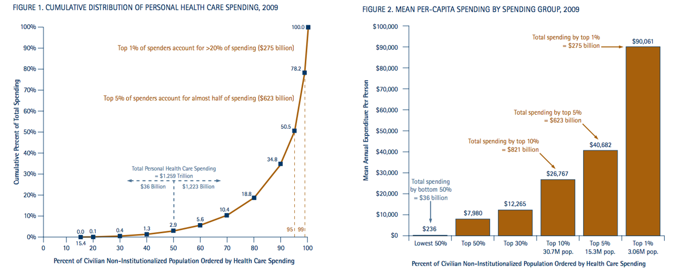

 <!-- About Section -->
    <section  id="about">
        <div class="container">
            <div class="row">
                <div class="col-lg-12 text-center">
                    <h2>About</h2>
                    <hr class="hospital-primary">
                </div>
            </div>
            <div class="row">
                <div class="col-lg-8 col-lg-offset-2 text-center">
                    <iframe width="420" height="315" src="https://www.youtube.com/embed/_vj-e62mPkw" frameborder="0" allowfullscreen></iframe>
                    <p>The rising cost of healthcare is one of the world’s most important problems. Healthcare policy researchers have devoted much effort toward finding solutions to the fast growth in health care spending over the past decade. Research has provided evidence that the growth is linked to modifiable population risk factors such as obesity and stress. Rising disease prevalence and new medical treatments account for nearly two-thirds of the rising spending. As MA residents, we are directly concerned with how the state controls its healthcare cost. As one article in Boston Globe put it, “The soaring costs of insuring the state’s poorest residents drove health care spending in MA up 4.8 percent last year, double the rate of growth in 2013, dealing a setback to the state’s effort to control medical costs.” /<p> <br>
                </div>
                <div class="col-lg-8 col-lg-offset-2 text-center">
                
                                        
                                        Source: NIHCM Foundation Data Brief 2012. http://www.nihcm.org/

                </div>
                <div class="col-lg-8 col-lg-offset-2 text-center">   <br>
                    <p>Therefore, predicting such costs with accuracy is a significant first step in addressing this problem, and may reveal insights into the nature of the key drivers of costs.</p>
                </div>
          
                
            </div>
        </div>
    </section>